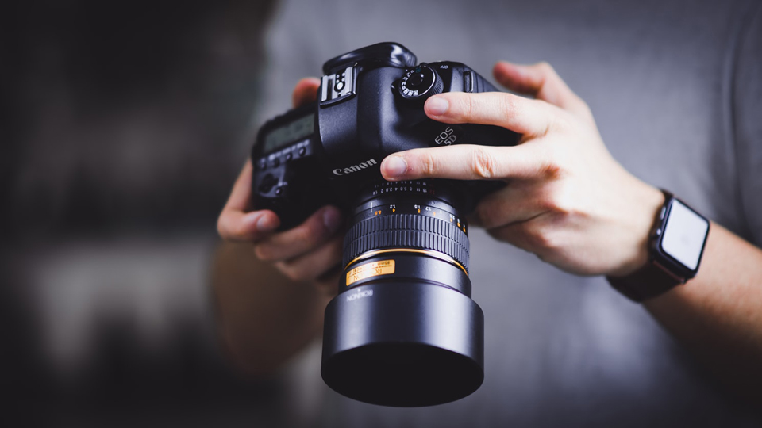

Сучасний фотограф – це художник, який створює картину вашого
життя з окремих фотознімків, де кожен кадр несе в собі цілу
історію кохання, щастя, віри та надії.
Професійний весільний фотограф за допомогою сотні фотографій
розповість глядачам захоплюючу історію вашого кохання.
Як фотограф гарантую: наше з вами невимушене спілкування в
процесі зйомки, живі та не постановочні знімки, допомога у
пошуку відповідних поз, непомітну, але якісну роботу із зйомки
всіх важливих, цікавих та хвилюючих моментів весілля чи інших
сімейних свят.
Сучасний фотограф – це художник, який створює картину вашого
життя з окремих фотознімків, де кожен кадр несе в собі цілу
історію кохання, щастя, віри та надії.
Професійний весільний фотограф за допомогою сотні фотографій
розповість глядачам захоплюючу історію вашого кохання.
Як фотограф гарантую: наше з вами невимушене спілкування в
процесі зйомки, живі та не постановочні знімки, допомога у
пошуку відповідних поз, непомітну, але якісну роботу із зйомки
всіх важливих, цікавих та хвилюючих моментів весілля чи інших
сімейних свят.
Професійна весільна фотосесія – Київ. Збираючись урочисто
відзначити початок сімейного життя, майбутнє подружжя ретельно
планує цю знакову подію. Весільний фотограф повинен не просто
робити знімки, він створює історію щасливого дня вашого життя
і
зобов'язаний передати на фотографіях всі емоції гостей, друзів
та родичів молодят. Турботи приготування до найважливішої
події,
переживання батьків, радість майбутнього подружжя, веселощі
друзів, хвилювання родичів, щасливий блиск в очах молодих -
все
залишається на фотографіях, які зробить професійний весільний
фотограф, щоб через багато років ви змогли подумки повернутися
в
цей чудовий день вашого весілля.
Професіонали часто поділяються на дрібніші спеціальності:
фотожурналісти, весільні фотографи, модельні, рекламні, пейзажні,
спортивні. Є такі, що займаються кількома видами зйомки.
Фото́граф, також світля́р — людина, що створює фотографії за
допомогою фотокамери.
Фотографи можуть бути професіоналами чи аматорами. Професіонали
заробляють фотографією на життя, аматори знімають задля
задоволення.
Робота фотографа може складати просту зйомку натюрморту, портрету,
пейзажу і т. д., або зйомку і обробку матеріалу. Створення
фотографії може бути як творчістю одного фотографа, так і роботою
цілої групи людей. Наприклад, фотографа, асистента, візажиста,
моделі, фуд-стиліста, декоратора, модельєра і т. д.
Фото́граф, також світля́р — людина, що створює фотографії за допомогою фотокамери. Фотографи можуть бути професіоналами чи аматорами. Професіонали заробляють фотографією на життя, аматори знімають задля задоволення. Робота фотографа може складати просту зйомку натюрморту, портрету, пейзажу і т. д., або зйомку і обробку матеріалу. Створення фотографії може бути як творчістю одного фотографа, так і роботою цілої групи людей. Наприклад, фотографа, асистента, візажиста, моделі, фуд-стиліста, декоратора, модельєра і т. д. Професіонали часто поділяються на дрібніші спеціальності: фотожурналісти, весільні фотографи, модельні, рекламні, пейзажні, спортивні. Є такі, що займаються кількома видами зйомки. Професіонали часто поділяються на дрібніші спеціальності: фотожурналісти, весільні фотографи, модельні, рекламні, пейзажні, спортивні. Є такі, що займаються кількома видами зйомки. Фото́граф, також світля́р — людина, що створює фотографії за допомогою фотокамери. Фотограф, перш за все, демонструє на відбитку своє бачення. Від початку існування фотографії між фотографами та іншими представниками штуки існував конфлікт сприйняття фотографії. Перші вважали її мистецтвом, другі — технічним процесом. Але з часом більшість визнала те, що створення образу — це, по-перше, створення композиції, бачення та винахід, і, по-друге, — технічний процес обробки, який теж згодом став інструментом штукарів. Англійський фотограф, 1850-х р.  Зазвичай процес отримання фотографічного зображення включає в себе отримання дійсного зображення за допомогою оптичної системи на час експозиції та фіксації цього зображення за допомогою світлочутливої системи у вигляді електронного файлу або на фотоплівці. У випадку фотоплівки отримане зображення зазвичай є негативом, з якого потім отримують позитивне зображення при друкуванні світлин (фотографій) за допомогою фотозбільшувача. Як при отриманні негатива, так і при друкуванні фотографій, зображення спочатку латентне: його потрібно спершу проявити (за допомогою проявника), а потім — зафіксувати. Під час отримання електронної фотографії зображення від оптичної системи оцифровується. Фотографія широко застосовується на виробництві, в наукових дослідженнях, для офіційних документів і в дозвіллі. Художня фотографія є окремим видом мистецтва. Фотографічний процес лежить в основі створення кіно.